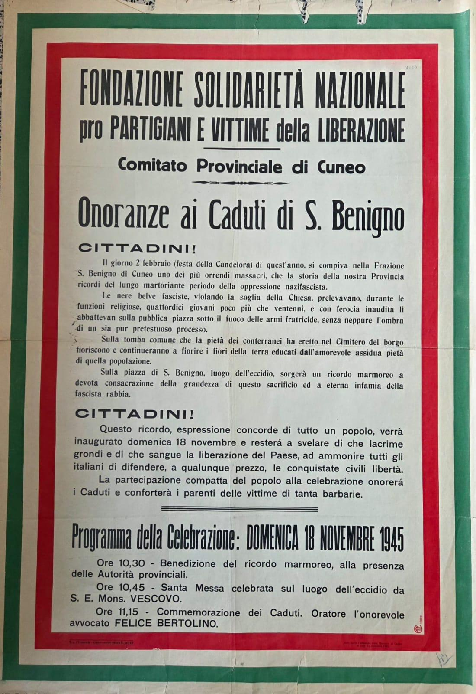
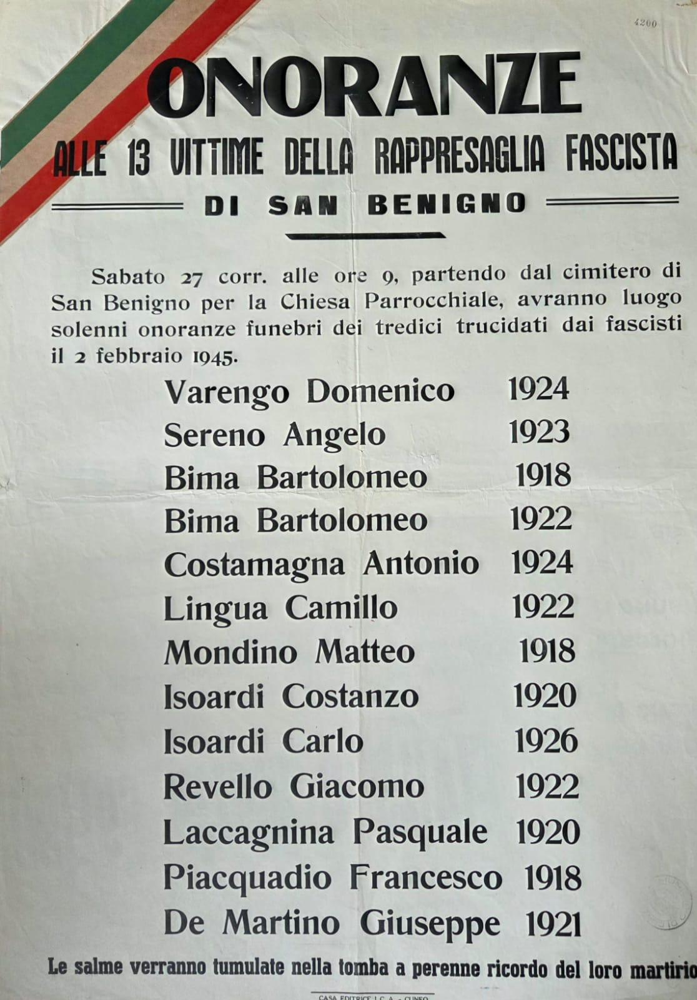

La sepoltura
La fine della guerra rese possibile un gesto atteso per mesi dalla comunità di San Benigno: dare degna sepoltura ai tredici giovani uccisi il 2 febbraio 1945 nella rappresaglia nazifascista.


I funerali
Il 18 novembre 1945 la frazione fu teatro di una grande cerimonia commemorativa, annunciata pubblicamente dal sindaco con un manifesto rivolto ai cittadini. L'invito sottolineava come la partecipazione collettiva dovesse rappresentare un segno di vicinanza alle famiglie colpite e, insieme, un tributo civile a chi era caduto per la conquista della libertà soffocata dal nazifascismo.
La giornata si aprì con un momento commemorativo nel luogo dell'eccidio: lo scoprimento di un ricordo marmoreo, la celebrazione della messa e l'orazione ufficiale delle autorità. Seguirono poi le solenni esequie dei tredici caduti, accompagnate da una straordinaria partecipazione popolare.

In quell'occasione venne inaugurata all'interno del cimitero della frazione una tomba appositamente costruita per custodire definitivamente le salme. Fino a quel momento i corpi erano stati deposti in una fossa comune, in attesa di una sepoltura definitiva che potesse restituire dignità individuale e memoria pubblica alle vittime.
La lapide reca ancora oggi la scritta "Caduti per rappresaglia fascista", sintesi di una memoria che la comunità ha voluto consegnare alle generazioni successive.

Ogni anno San Benigno rinnova il ricordo con una celebrazione religiosa, una cerimonia civile e la deposizione di una corona di fiori nel luogo esatto della fucilazione, davanti alla lapide che riporta i nomi delle vittime. Alla loro memoria è dedicata anche la piazza centrale del paese.